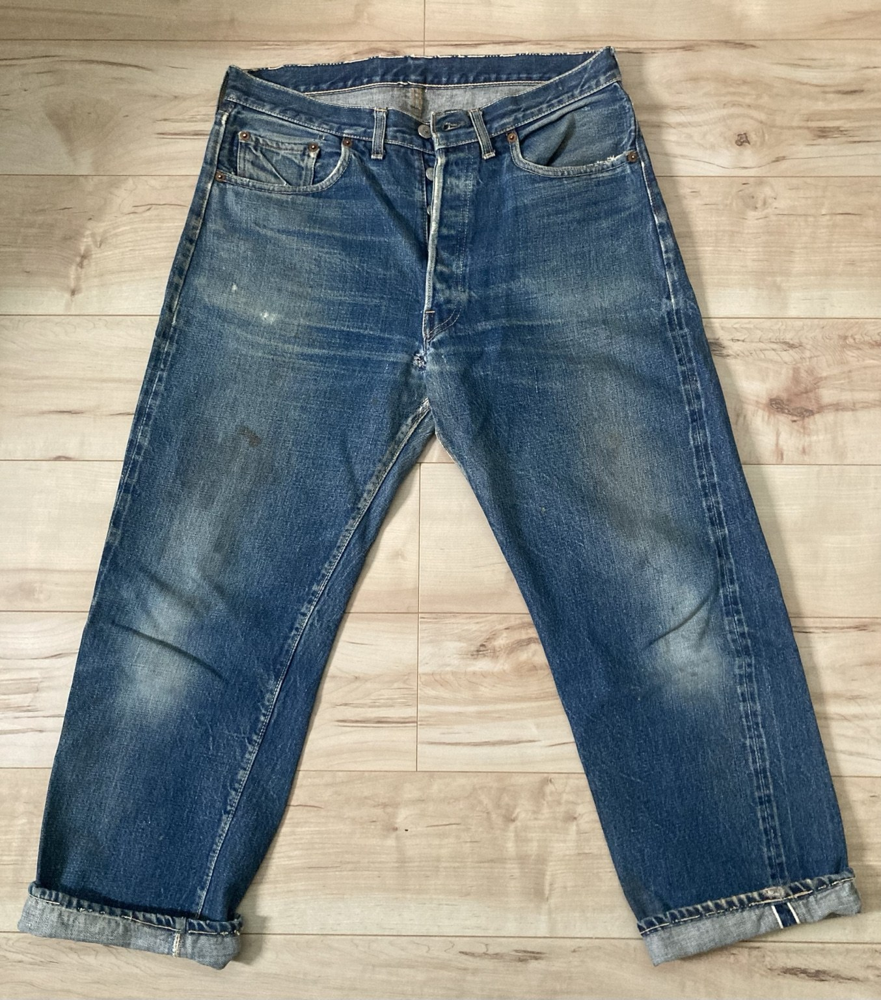
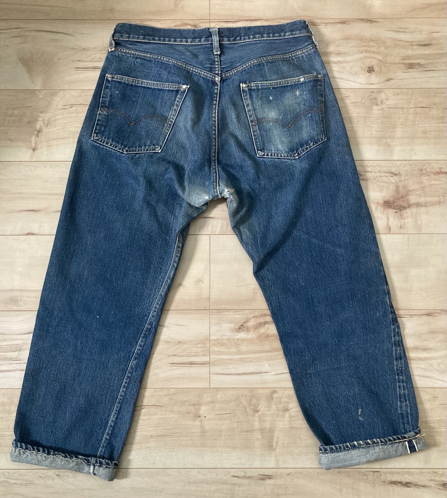

Front

DENIM FADE LAB / LEVI'S 501E
完成したヴィンテージ501を実物写真で記録します。
このページでは所有している501E Originalを、これからデニムを育てる際の比較資料として記録します。濃淡の残ったブルー、太腿から膝にかけての色落ち、ヒゲ、裾のアタリなど、完成したヴィンテージ501の表情を観察できます。
色落ちは着用、洗濯、生地、個体差によって変化するため、この一個体の状態を「完成形の一例」として紹介します。


写真をクリックすると拡大表示できます。